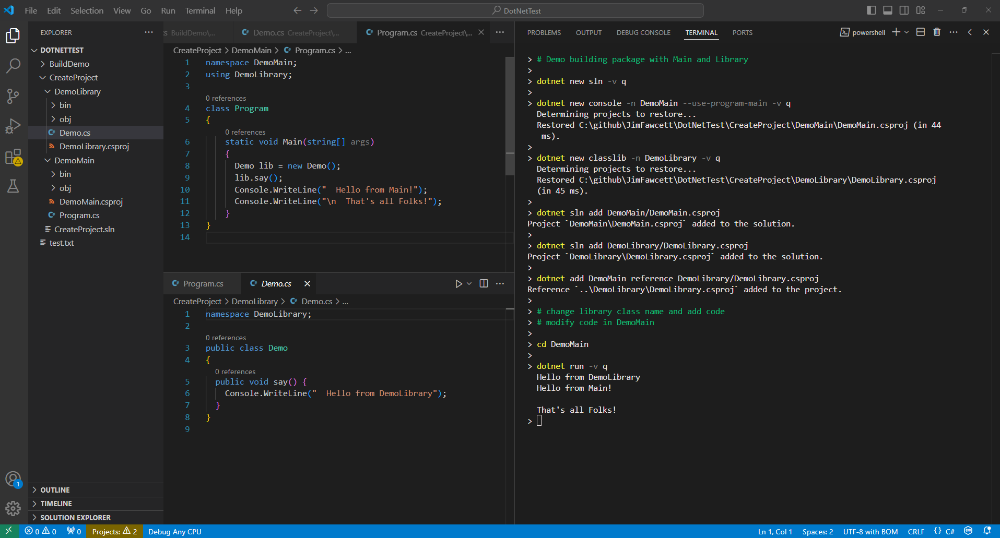

| dotnet command | description |
|---|---|
|
new
[ Example: create project ].
click to enlarge

|
create new sln, console project, or classlib project
syntax: dotnet new console [options] options: (--name, -n), --force, --dry-run, --use-program-main example: dotnet new console -n MyApp --use-program-main create console application MyApp providing explicit namespace and class with main() in new subdirectory MyApp syntax: dotnet new classlib [options] options: (--name, -n), --force, --dry-run example: dotnet new classlib -n DemoLib create class library in new subdiretory DemoLib syntax: dotnet new sln [options] options: (--name, -h), --force example: dotnet new sln -n DemoDotnet create dotnet solution file |
| add |
add reference to project
syntax: dotnet add [project] reference project_path example: dotnet add DemoMain reference DemoLibrary/DemoLibrary.csproj |
| sln |
add project to sln
syntax: dotnet sln add project_path example: dotnet sln add DotnetDemo/DemoMain.csproj |
| build |
build dotnet project or solution
syntax: dotnet build [<project> | <solution >] [options] options: (-c, --configuration), -v, --nologo example: dotnet build example: dotnet build -c Debug example: dotnet build -c Release |
| run |
build (if needed) and execute
syntax: dotnet run [<cmdln arguments>] [options] options: (-c, --configuration), -v example: dotnet run # must be in dir holding project with main example: dotnet run --project DemoMain |
| clean |
remove build files and executables
syntax: dotnet clean [<project | solution>] [options] options: -v example: dotnet clean |
| format |
format source code
syntax: dotnet format [<project | solution>] [options] options: --diagnostics, --include, --exclude, -v example: dotnet format |
| help |
display dotnet syntax with comments
syntax: dotnet [command] -h example: dotnet sln -h |
> # demo building package with Main and Library
>
> dotnet new sln -v q
>
> dotnet new console -n DemoMain --use-program-main -v q
>
> dotnet new classlib -n DemoLibrary -v q
>
> dotnet sln add DemoMain/DemoMain.csproj
>
> dotnet sln add DemoLibrary/DemoLibrary.csproj
>
> dotnet add DemoMain reference DemoLibrary/DemoLibrary.csproj
>
> # change default library class name and add code
> # modify code in DemoMain
>
> cd DemoMain
>
> dotnet run -v q
> Hello from DemoLibrary
> Hello from Main!
>
> That's all Folks!
>
namespace Main;
using DemoLib;
class Program
{
static void Main(string[] args)
{
Demo dosay = new Demo();
Console.WriteLine();
dosay.say();
Console.WriteLine(" Hello World from Main!");
Console.WriteLine("\n That's all Folks\n\n");
}
}
namespace DemoLib;
public class Demo
{
public void say() {
Console.WriteLine(" Hello from DemoLib!");
}
}
C:\github\JimFawcett\DotnetDemo\main
> dotnet run
Hello from DemoLib!
Hello World from Main!
That's all Folks
C:\github\JimFawcett\DotnetDemo\main
>
<Project Sdk="Microsoft.NET.Sdk">
<ItemGroup>
<ProjectReference Include="..\DemoLib\DemoLib.csproj" />
</ItemGroup>
<PropertyGroup>
<OutputType>Exe</OutputType>
<TargetFramework>net8.0</TargetFramework>
<ImplicitUsings>enable</ImplicitUsings>
<Nullable>enable</Nullable>
</PropertyGroup>
</Project>
<Project Sdk="Microsoft.NET.Sdk">
<PropertyGroup>
<TargetFramework>net8.0</TargetFramework>
<ImplicitUsings>enable</ImplicitUsings>
<Nullable>enable</Nullable>
</PropertyGroup>
</Project>
Microsoft Visual Studio Solution File, Format Version 12.00
# Visual Studio Version 17
VisualStudioVersion = 17.0.31903.59
MinimumVisualStudioVersion = 10.0.40219.1
Project("{FAE04EC0-301F-11D3-BF4B-00C04F79EFBC}") = "Main", "Main\Main.csproj", "{2A861DAE-402B-4138-BBF7-B697BC068DFB}"
EndProject
Project("{FAE04EC0-301F-11D3-BF4B-00C04F79EFBC}") = "DemoLib", "DemoLib\DemoLib.csproj", "{1E75534B-6925-4121-8503-2418F08B312F}"
EndProject
Global
GlobalSection(SolutionConfigurationPlatforms) = preSolution
Debug|Any CPU = Debug|Any CPU
Release|Any CPU = Release|Any CPU
EndGlobalSection
GlobalSection(SolutionProperties) = preSolution
HideSolutionNode = FALSE
EndGlobalSection
GlobalSection(ProjectConfigurationPlatforms) = postSolution
{2A861DAE-402B-4138-BBF7-B697BC068DFB}.Debug|Any CPU.ActiveCfg = Debug|Any CPU
{2A861DAE-402B-4138-BBF7-B697BC068DFB}.Debug|Any CPU.Build.0 = Debug|Any CPU
{2A861DAE-402B-4138-BBF7-B697BC068DFB}.Release|Any CPU.ActiveCfg = Release|Any CPU
{2A861DAE-402B-4138-BBF7-B697BC068DFB}.Release|Any CPU.Build.0 = Release|Any CPU
{1E75534B-6925-4121-8503-2418F08B312F}.Debug|Any CPU.ActiveCfg = Debug|Any CPU
{1E75534B-6925-4121-8503-2418F08B312F}.Debug|Any CPU.Build.0 = Debug|Any CPU
{1E75534B-6925-4121-8503-2418F08B312F}.Release|Any CPU.ActiveCfg = Release|Any CPU
{1E75534B-6925-4121-8503-2418F08B312F}.Release|Any CPU.Build.0 = Release|Any CPU
EndGlobalSection
EndGlobal
| Link | Content |
|---|---|
| dotnet command | Microsoft Learn tutorial on dotnet CLI |
| .Net Core Command-Line Interface | tutorial - tutorialsteacher.com |
| Download .Net | Download free cross-platform, open-source .Net platform, including dotnet.cli |